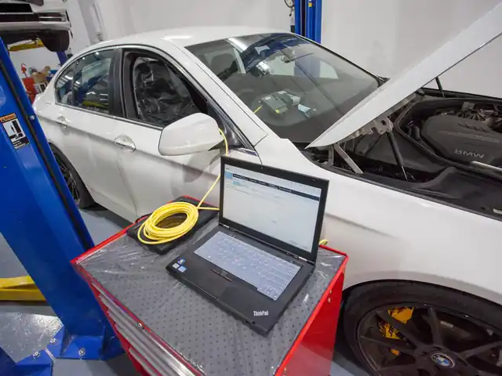
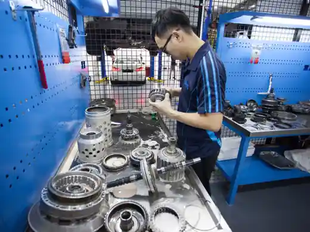
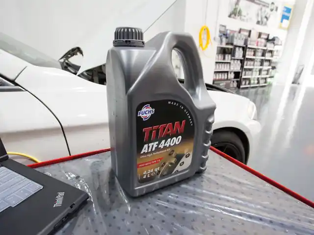

In short: A small roll back on a steep slope is normal for many automatic cars. Drive only builds up once the engine and gearbox take hold, so the car can slip back a little when you release the brake. A longer roll, a delay before the car pulls away, or a roll that is new for your car points to a problem. Low or worn gearbox oil is the first thing to check, then the torque converter and clutches.
Is it normal for an automatic car to roll back on a slope?
Yes, to a small degree. An automatic has no clutch pedal to hold the car, so on a ramp or a steep slope it can move back a little between letting go of the brake and the drive taking up. Many newer cars have a hill-hold or hill start assist that keeps the brake applied for a moment; your owner's manual says whether yours has it. Dual-clutch cars have no torque converter, so a small roll back before the clutch bites is common on them. See CVT, dual-clutch or automatic if you are not sure which gearbox you have.
When does roll back point to a gearbox problem?
Roll back is more likely a fault when it is new, or when it comes with other signs:
- The car used to hold on the same slope and now rolls back further.
- There is a delay, or the engine revs, before the car moves in Drive or Reverse.
- Shifts feel like slipping, with high revs and little pull. See gearbox slipping.
- You see red or brown fluid under the car, or smell burning.
- A transmission or engine warning light is on. See the transmission warning light.
What can cause an automatic car to roll back more than it should?
Common causes are low or worn gearbox oil, a weak torque converter, worn clutches inside the gearbox, and an engine that is not running smoothly at idle, because less power reaches the gearbox. A fluid leak can lower the oil level without any warning light. Each of these needs checking before any repair is decided.
What should you check first?
1. Notice whether the roll happens in Drive only, in Reverse only, or both. 2. Check that the engine idles smoothly and has no engine warning light. 3. Check the gearbox fluid as the owner's manual describes. Many cars have no dipstick, so read how to check automatic gearbox fluid. 4. Look under the car for fresh drips. 5. Have the fault codes read if any light is on.
How can you stay safe on a slope until it is checked?
Do not rely on the gearbox to hold the car. Keep a safe gap to the car behind, move off with a firm, smooth press on the accelerator, and use the handbrake or hill-hold where your car has it. Do not hold the car on a slope with the accelerator alone, because that heats the gearbox. Worn clutches and a hot gearbox shorten its life; driving habits that damage an automatic gearbox explains more.
Can Jacky check a car that rolls back?
Yes. Jacky reads the transmission fault codes, checks the fluid and tests the gearbox, then tells you whether the cause is a simple fix or a gearbox repair before any work starts. The pre-repair diagnostic is from S$30, and repairs come with a 6-month warranty. See gearbox repair and gearbox servicing. Old or low gearbox oil is often the first thing found, so also read how often to change gearbox oil.
Not sure what your gearbox needs?
Jacky diagnoses and tests the gearbox himself and tells you the fault and the price before any work starts. Pre-repair diagnostic from S$30.
Questions
Is it normal for an automatic car to roll back on a slope?
Why does my car roll back when I release the brake in Drive?
Can low gearbox oil make a car roll back?
Do dual-clutch cars roll back more than normal automatics?
Related services

Gearbox Repair & Overhaul
We have a full range of diagnostic tools specialising in auto transmission to accurately identify the root cause.…
Learn more →
Gearbox Maintenance & Servicing
Regular servicing of the auto transmission is as important as servicing the engine. We only use the manufacturer’s…
Learn more →Related gearbox problems
Transmission check light on
The engine or transmission check light comes on while driving. Some cars also hold one gear (often called “limp mode”) to protect the gearbox.
What it means →Lack of response
You press the accelerator and the car hesitates, or there is a delay before it goes into Drive or Reverse.
What it means →Can’t change gear
The car stays in first gear, or only shifts up to third, when moving off or while driving.
What it means →More articles
Why Does My Automatic Car Roll Back on a Slope?
Automatic car rolls back on a slope before it moves off? A small roll is normal, a long one is not. What causes it, what to check first, and when to see a gearbox specialist.
Read article →5 November 2026What Do P, R, N, D, S, L and M Mean on an Automatic Gear Lever?
What P, R, N, D, S, L, 2, 1, M and B mean on an automatic gear lever, when to use the low and manual positions, and what to avoid so the gearbox lasts.
Read article →3 November 2026What Is the Difference Between a Gearbox and a Transmission?
Gearbox and transmission are often used for the same thing. What each word means, how an automatic differs, and what to say when you describe a fault to a workshop.
Read article →